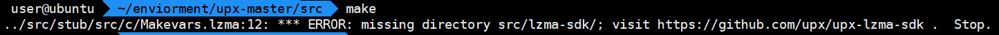
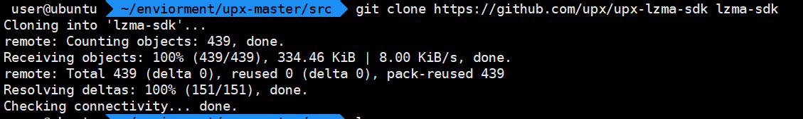
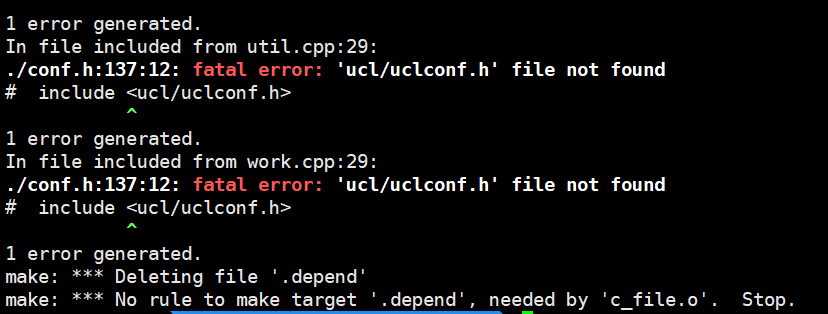
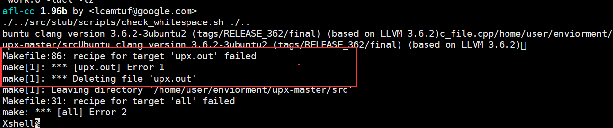
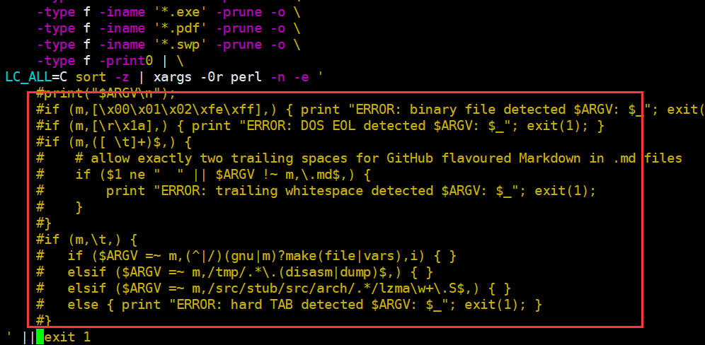
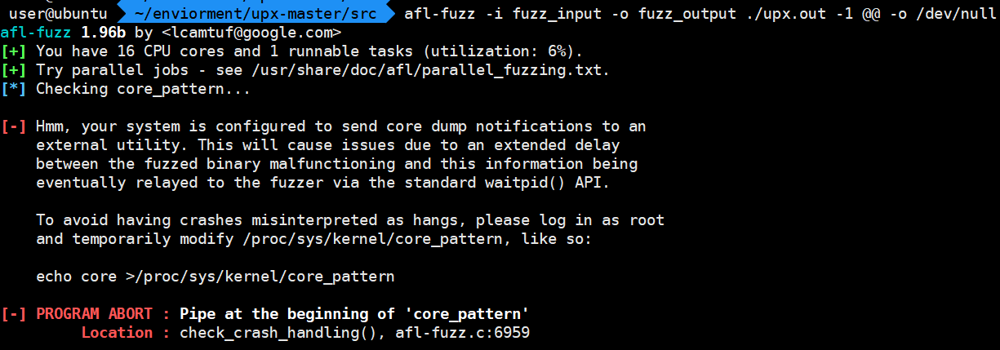
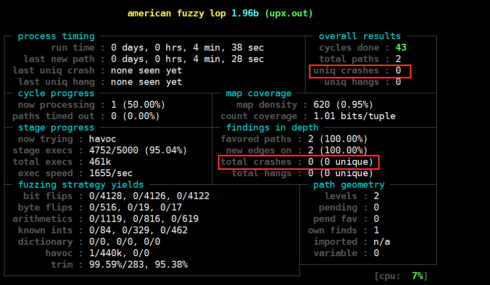
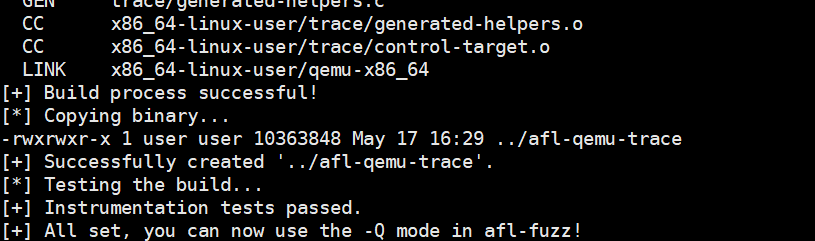
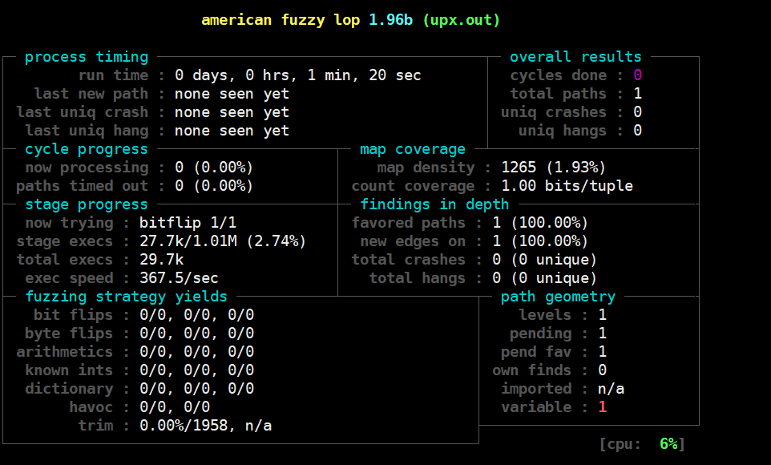

0x00 AFL 基础
American Fuzz Lop简称 AFL，是一款模糊测试工具。模糊测试（Fuzzing），是一种通过向目标系统提供非预期的输入并监视异常结果来发现软件漏洞的方法。通常的流程：提供一个正常的输入；修改一部分内容；输入给程序；观察程序的处理过程是否异常。
环境
- Ubuntu 16.04 LTS X86_64
安装
apt install afl
如果大家需要较新版本的AFL，也可通过AFL的官网下载源码自行编译。
|
0x01 AFL的FUZZ模式
AFL同时支持两种Fuzz模式：
- 有源码模式
- 无源码模式（
afl-qemu）
有源码模式
使用AFL来进行有源码fuzz基本上是依赖于AFL中的代码插桩。使用有源码模式需要使用afl-clang或afl-clang++来编译。
我们以UPX为例，讲解使用AFL来fuzz UPX。
首先，我们从github上下载UPX的代码，随后进入到src文件夹后使用如下命令编译。
make CC="afl-clang" CXX="afl-clang++" -j16
其中CC为c语言的编译器，CXX为c++语言的编译器。
不过，报了如下的错误

这个是由于没有upx-lzma-sdk导致的，我们需要从github下载这个sdk放到lzma-sdk文件夹下

接着继续编译，会报这些错误

这个是由于没有安装libucl库导致的，我们安装一下即可sudo apt install libucl-dev。安装完成后，我们继续编译。然后报了一个这个错

需要修改文件src/stub/scripts/check_whitespace.sh将下图部分注释掉

继续编译，会在当前目录下生成文件upx.out，这个就是upx的程序本身了。接着我们就可以使用afl来fuzz这个UPX程序。首先我们创建输入文件夹fuzz_input和输出文件夹fuzz_output，将一个ELF文件拷贝到输入文件夹中。随后执行命令
afl-fuzz -i fuzz_input -o fuzz_output ./upx.out -1 @@ -o /dev/null
这里面，afl会用自己生成的testcase替换@@。不过，执行后程序又报错了，如下图

这是因为，没有开启系统的coredump，我们用它的命令开启系统的coredump。开启完成后，我们继续执行fuzz的命令，就可以看到如下界面了。此时，afl已经开始fuzz UPX程序了

如果程序有崩溃，afl会将崩溃的样本放在fuzz_output中，我们就可以详细进行分析了。
无源码模式
AFL的无源码模式的fuzz依赖于qemu虚拟化。我们使用apt方式安装的afl没有afl-qemu-trace(不支持使用QEMU模式)，所以我们需要下载afl的源码自己编译。
下载解压后，我们通过make直接编译。编译完成后，需要配置qemu环境。不过，afl提供了一个脚本，在qemu-mode文件夹下的build_qemu_support.sh。我们运行一下这个脚本来配置qemu环境。运行后会提示libtool没有安装，我们使用sudo apt install libtool-bin安装即可。
QEMU环境配置完成后提示

然后使用命令afl-fuzz -i fuzz_input -o fuzz_output1 -Q -m 200 ./upx.out -1 @@ -o /dev/null即可开始fuzz，如图。

0x02 分布式fuzz
在使用afl-fuzz时，每个进程只会占用一个CPU核心。如果我们的机器是多核处理器，我们可以通过进行分布式fuzz来提高fuzz速度。
|
注意，这里-o跟的参数一定要保持一致，这个是用来同步各个fuzz进程的。
若分布式意外退出可以使用以下命令继续fuzz任务。
|
最后祝大家早日FUZZ到属于自己的漏洞。
Refer
http://lcamtuf.coredump.cx/afl/
https://baike.baidu.com/item/%E6%A8%A1%E7%B3%8A%E6%B5%8B%E8%AF%95/2848962